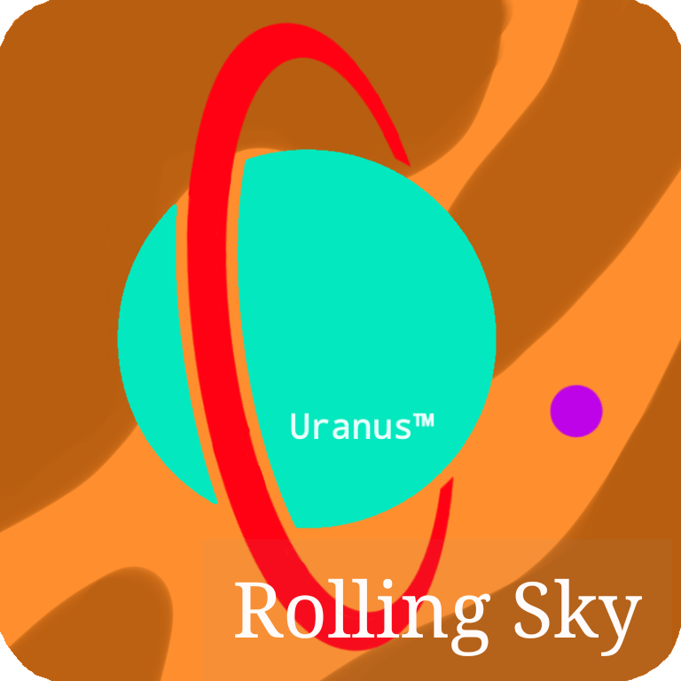

人間を卒業した者に送る史上最強の難関ゲーム。あなたはこの地獄のステージをクリアできるでしょうか？ Rolling Sky Fanmade Game!!ローリングスカイの二次創作ゲーム！ボカロ、アニメ曲、ゆっくり虐待、鉄道、等のステージを楽しみましょう！世界は新たに創造される。
Rolling Sky Evolution
Fanmade Game
Create by Figseu Technology

----------------------------------
利用規約
アップデート
Sound Room
----------------------------------
難易度選択
☆1☆2☆3☆4☆5
☆6☆7☆8☆9☆10
☆11
----------------------------------
公式アカウント (Pixiv)
公式アカウント (Twitter)